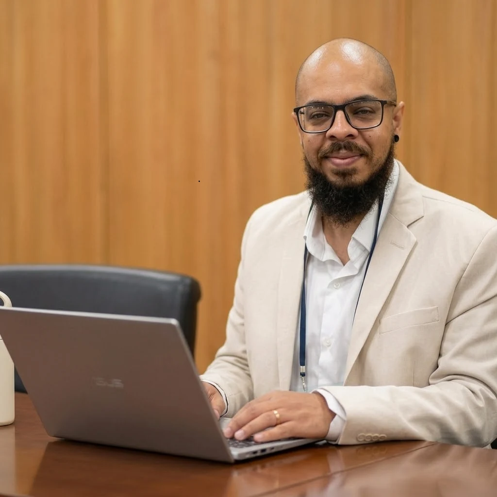

Trajetória
Quem sou
Minha relação com a acessibilidade não começou quando ela virou meu trabalho. Foi sendo construída muito antes, no jeito como eu estudava, usava tecnologia e encontrava formas de continuar fazendo as coisas à medida que minha visão mudava.
Tecnologia antes da carreira
Ganhei meu primeiro computador aos 12 anos. Era um Positivo All in One, com 512 MB de RAM, disco rígido de 8 GB e um Windows XP que ocupava quase 5 GB daquele espaço todo.
Comecei a navegar na internet ao som de uma conexão discada e, algum tempo depois, tivemos uma conexão espetacularmente rápida do Speed, com incríveis 256 kb/s. Ou seja: por aqui, era (quase) tudo mato.
Por volta dos 13 anos, fui diagnosticado com ceratocone. A doença evoluiu de forma agressiva e, enquanto computadores, internet e recursos digitais começavam a ocupar cada vez mais espaço no meu cotidiano, eu também passava a enxergar cada vez menos.
O computador começou então a significar mais do que curiosidade, entretenimento e uma arena de Tibia ou de Rise of Nations, jogos que eu adorava. Virou também ferramenta de estudo, pesquisa e adaptação. Aos poucos, materiais digitais, ampliação de tela e outras formas de acessar informação começaram a ocupar naturalmente o espaço de materiais impressos que se tornavam cada vez mais difíceis de ler.
Aprender a acessar
Aos 15 anos, ingressei no curso de Mecânica Industrial do SENAI. A escolha foi influenciada pela profissão do meu pai, que trabalhava como torneiro mecânico, mas não apenas por ela: a admiração que eu tinha — e continuo tendo — por ele, como trabalhador e como pai, fez com que aquele universo também se tornasse uma referência para mim. Em 2010, já havia concluído o ensino médio, prestado o Enem e conquistado uma bolsa integral do ProUni para cursar Engenharia Mecânica.
Com a progressão do ceratocone, passei a usar lentes de contato rígidas. Elas melhoravam bastante minha visão, mas tinham um limite de tempo de uso. Como eu trabalhava durante o dia e estudava à noite, muitas aulas aconteciam quando usar as lentes já era mais uma tortura visual do que um alívio para os borrões.
Estudar passou então a envolver uma combinação constante de estratégias. Eu fazia anotações a partir das explicações dos professores, produzia resumos digitais, aumentava fontes, usava telas maiores do que a média e recorria a recursos de ampliação de imagens e aumento de contraste.
Ferramentas como o Virtual Magnifying Glass e a extensão High Contrast passaram a fazer parte desse repertório. Também utilizei softwares de leitura de texto, como TextAloud e Balabolka, que permitiam transformar textos longos em uma experiência de leitura menos dependente da visão.
Naquela época, eu já percebia o potencial da tecnologia para permitir diferentes formas de estudar, trabalhar e acessar informação. Mas ainda não conhecia aquilo pelo nome de acessibilidade digital. O termo não fazia parte do meu vocabulário. O conceito por trás dele, porém, eu já conhecia bastante bem na prática.
Engenharia, educação e outras formas de aprender
Durante a graduação em Engenharia Mecânica, também fui percebendo que alguns caminhos profissionais fariam mais sentido para mim do que outros. Minha trajetória foi se aproximando gradativamente do desenvolvimento de projetos, softwares de engenharia, sistemas para gestão de atividades e organização do trabalho.
Entre 2015 e 2018, depois de me formar em Engenharia, cursei Licenciatura em Física. Nesse período, trabalhei com docência e passei a explorar com mais intensidade o uso pedagógico da tecnologia. Recursos como simulações digitais, dispositivos móveis e diferentes formas de apresentar conteúdos começaram a fazer parte da minha prática.
Também participei de um grupo de estudos e pesquisas em avaliação educacional, em atividades relacionadas à avaliação em larga escala e ao uso de tecnologias na educação.
Educação, tecnologia, avaliação e acessibilidade ainda apareciam para mim como temas relativamente independentes. Com o tempo, eles começariam a se encontrar.
Quando a tecnologia deixou de ser apenas apoio
Entre 2016 e 2017, enquanto aguardava um transplante de córnea, minha interação com dispositivos tecnológicos chegou, em determinados períodos, a acontecer de maneira quase totalmente não visual.
Foi quando o NVDA, que até então era mais uma ferramenta entre outras que eu conhecia, ganhou uma importância diferente. Navegação por teclado, leitura de tela e áudio passaram a ocupar temporariamente o lugar que antes era preenchido principalmente por ampliação e aumento de contraste.
Passei pelo transplante em 2017 e atravessei o período de recuperação até o início de 2018. Depois disso, a forma como utilizava tecnologia mudou novamente. Recursos voltados a pessoas com baixa visão voltaram a ocupar uma parte maior da rotina, enquanto leitores de tela continuaram presentes quando a tarefa, o conteúdo ou simplesmente o cansaço visual tornavam a interação por áudio mais adequada.
Mais tarde, esse repertório ganhou outra camada com os smartphones. Meu primeiro contato mais consistente com um leitor de tela em dispositivo móvel aconteceu em um iPhone 5s — aquele modelo cinza escovado que, até hoje, acho que foi o aparelho mais bonito da Apple. Foi ali que comecei a explorar o VoiceOver no cotidiano.
Quando chegou a hora de trocar de aparelho, a escolha passou a envolver também custo-benefício, considerando tamanho de tela e minhas necessidades visuais. Um telefone Android com tela grande, que me permitisse trabalhar melhor com ampliação, custava consideravelmente menos do que um iPhone de dimensões similares. Desde então, sigo usando Android e recorro ao TalkBack sempre que preciso.
Essa alternância acabou sendo importante também profissionalmente. Passei a perceber a chamada interface homem-máquina a partir de uma experiência que não correspondia exatamente ao “homem” pressuposto por muitos projetos de interface. Às vezes eu interagia visualmente; em outras, por teclado, ampliação ou leitor de tela.
Viver essas diferentes formas de interação transformou meu olhar sobre os ambientes digitais. Pela própria experiência, fui percebendo como escolhas aparentemente pequenas podiam ampliar minha autonomia ou transformar uma tarefa simples em um tormento.
Foi também nesse processo que tive contato e comecei a estudar e tentar entender de forma mais sistemática referências como as WCAG. Muitas barreiras que eu já conhecia por experiência começaram a ganhar nomes e formas mais estruturadas de identificar e (tentar) ultrapassar.
Quando os temas começaram a se encontrar
Em 2019, participei de um Startup Weekend dedicado à acessibilidade.
Não foi exatamente um momento de descoberta. Acessibilidade, deficiência, tecnologia e educação já estavam presentes havia bastante tempo na minha vida. O evento foi importante porque começou a aproximar temas que, até então, apareciam de maneira relativamente solta na minha trajetória pessoal e profissional.
Durante o evento, apresentei o MeConte, uma proposta de plataforma de streaming para audiodescrição dedicada a pessoas cegas.
O projeto também revela o estágio em que eu me encontrava na compreensão da acessibilidade. Naquele momento, eu ainda pensava a proposta para um público específico, e não a partir de uma perspectiva mais ampla de inclusão. Conceitos que hoje orientam meu trabalho, como o desenho universal e a criação de soluções concebidas desde o início para diferentes pessoas, ainda não faziam parte do meu repertório.
A acessibilidade foi deixando de ser apenas uma experiência pessoal ou um tema que aparecia pontualmente nos meus estudos e passou a ocupar, de forma cada vez mais consciente, o centro da minha atuação profissional.
Entre prática, estudo e pesquisa
Entre 2019 e 2024, atuei como diretor de operações em uma startup focada em acessibilidade digital e comunicação inclusiva. Foi um período em que meu trabalho deixou de estar concentrado apenas na execução técnica e passou a envolver também desenho de processos, coordenação de equipes, controle de qualidade, relacionamento com clientes e organização de projetos de grande escala.
Ao mesmo tempo, estudar passou a ser uma forma de ampliar aquilo que eu conseguia realizar profissionalmente.
Na especialização em Docência do Ensino Superior, desenvolvi uma pesquisa relacionada ao mercado da educação a distância. Foi uma das formas de aproximar questões que já apareciam na minha prática: tecnologia, ensino, acesso e participação.
Também aprofundei minha formação em audiodescrição, uma área que já fazia parte da minha atuação profissional e que me ajudava a observar com mais cuidado a relação entre informação visual, linguagem e acesso.
No mestrado em Educação, essa relação entre tecnologia, deficiência e educação ganhou outra dimensão. A pesquisa que depois deu origem ao livro Entre a Leitura e a Permanência partiu da experiência de estudantes com deficiência visual no ensino superior e discutiu questões relacionadas a materiais didáticos, tecnologias assistivas, acessibilidade e permanência.
Após a conclusão da pesquisa de mestrado, retomei parte dessa discussão em uma revisão integrativa sobre tecnologias assistivas e inclusão de estudantes com deficiência visual no ensino superior. O trabalho foi elaborado como um material mais conciso, pensado para publicação em formato de artigo, mas ainda não foi publicado.
Esse percurso ampliou meu olhar sobre acessibilidade. Ela deixou de aparecer apenas como requisito técnico ou como característica de uma ferramenta e passou a ser compreendida como parte das condições concretas para que alguém consiga estudar, participar e permanecer em um ambiente educacional.
Esse movimento nunca foi de mão única. O que eu estudava mudava a forma como trabalhava, e os problemas encontrados no trabalho voltavam para o estudo e para a pesquisa como novas perguntas.
Em 2024, iniciei uma nova etapa profissional na Prefeitura de São Paulo, assumindo a direção da Divisão de Acessibilidade Digital e Comunicação Inclusiva.
Minha atuação passou então a envolver de maneira mais direta avaliação técnica, serviços digitais, comunicação inclusiva, políticas públicas e governança de acessibilidade.
Nesse mesmo período, a pesquisa continuou acompanhando a prática. Em um trabalho acadêmico mais recente, ainda não publicado, passei a investigar padrões e variações nos indicadores automatizados de acessibilidade digital de portais de prefeituras brasileiras, buscando compreender também como esse tipo de avaliação pode contribuir para processos contínuos de acompanhamento da acessibilidade na Administração Pública.
Ferramentas como AMAWeb, AccessMonitor e WAVE, assim como referências como as WCAG, a ABNT NBR 17225 e a ABNT NBR 17060, passaram a fazer parte de um trabalho que combina análise técnica, gestão e acompanhamento de serviços digitais.
Também iniciei um MBA em Gestão Estratégica de Tecnologia da Informação. As discussões sobre governança, processos, operação e estratégia começaram a se cruzar com questões que eu já enfrentava no trabalho com acessibilidade digital.
Foi desse encontro que começaram a surgir as reflexões que depois se transformariam no AccessOps Framework, uma proposta de organizar acessibilidade digital como prática contínua de governança, integrada aos processos de desenvolvimento, operação e melhoria de serviços digitais, e não apenas como uma etapa pontual de avaliação.
Hoje, vejo estudo e prática menos como duas frentes separadas e mais como ciclos de aprofundamento. Uma experiência concreta gera uma pergunta; o estudo e a pesquisa ajudam a organizar essa pergunta; e o que aprendo volta para a prática em forma de novos métodos, processos e decisões.
Minha atuação está concentrada em acessibilidade, mas não em uma única forma de trabalhar com ela. A trajetória acabou sendo construída justamente na interseção entre tecnologia, educação, pesquisa, avaliação, gestão, comunicação inclusiva e tecnologias assistivas.
Uma trajetória que também se tornou internacional
A dimensão internacional dessa trajetória começou a ganhar forma em 2021, quando participei da fundação do Rotary Club of World Disability Advocacy , um clube internacional criado em torno de temas relacionados à deficiência, inclusão e defesa dos direitos humanos.
Minha atuação começou na área de projetos, inicialmente como Project Officer. Como membro do Board, participei da construção de processos de governança, análise de propostas, elaboração de políticas para projetos e acompanhamento de iniciativas desenvolvidas por equipes distribuídas internacionalmente.
Posteriormente, passei a atuar como Accessibility Officer. Nessa função, apoio o Board em decisões relacionadas à acessibilidade e inclusão, acompanho aspectos de acessibilidade da infraestrutura digital e do site do clube, identifico recursos que possam ampliar a participação e oriento membros sobre o uso de funcionalidades e práticas inclusivas.
Mais recentemente, passei a integrar a International Association of Accessibility Professionals — IAAP — como Professional Member (abre em nova aba), aproximando essa trajetória de uma comunidade profissional internacional dedicada à acessibilidade.
Quando olho para esse percurso, acessibilidade aparece menos como uma área que escolhi em algum momento específico e mais como algo que foi tomando forma na interseção entre experiências que já estavam ali: deficiência, tecnologia, educação, pesquisa, trabalho e participação comunitária.
Talvez por isso eu continue interessado não apenas em saber se uma tecnologia atende a uma norma, mas em entender o que acontece quando alguém realmente tenta utilizá-la.
